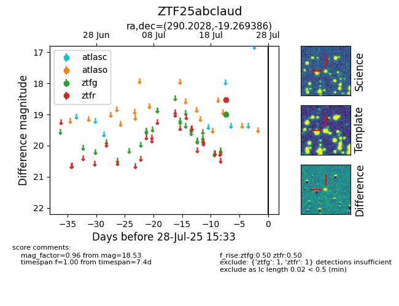

Target ZTF25abclaud at 2025-07-23 11:52, see:
FINK: fink-portal.org/ZTF25abclaud
Lasair: lasair-ztf.lsst.ac.uk/objects/ZTF25abclaud
ALeRCE: alerce.online/object/ZTF25abclaud
alt names
ZTF25abclaud (ztf,fink)
coordinates:
equatorial (ra, dec) = (290.2028,-19.26939)
galactic (l, b) = (18.6293,-14.94309)
photometry
last ztfr=18.53
1 ztfr detections
